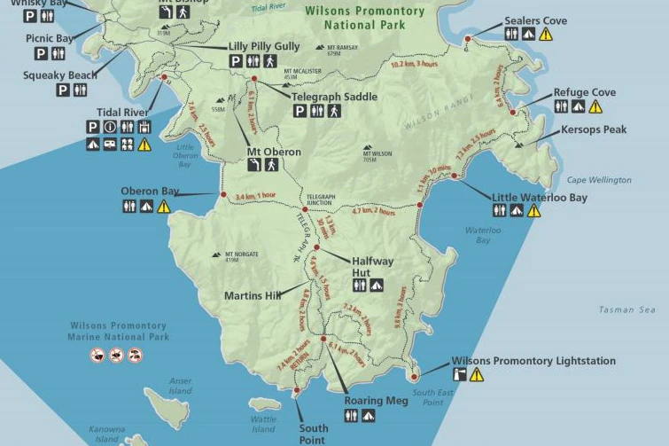

What better way to celebrate the easing of COVID lockdown measures than to go out for a long hike in Victoria's beautiful Wilson's Prom?
I invited my research teammate, and my girlfriend's brother, Tim, along for the 3-day hike on Wilson's Prom's southern circuit. The whole southern part is 5 days or so, but we only did the eastern part.
Our trek starts at Telegraph Saddle, but to get there, we parked near the Tidal River Visitor Centre, which has a shuttle bus to Telegraph Saddle. Our hike took us to Sealer's Cove campsite, and then Little Waterloo Bay campsite, before finishing at Tidal River Visitor Centre again via Telegraph Junction and Little Oberyn Bay. The full track would continue south from Little Waterloo Bay, to reach the lightstation.
We brought all our food and water along with us as apparently some of the campsites did not have guaranteed access to water. We each brought about 5L each. We stayed in a 3-person tent (was still a tight fit) and took turns carrying it. Our diet consisted mostly of dehydrated peas and mash, and instant noodles.
The hike challenging at first, as there is an ascent up Telegraph saddle. The ascent was pretty mild (about 120m over 3km), but I think having the 5L of water made it feel very difficult. Or maybe Tim is just super fast and I got puffed just trying to keep up 😭.
The hike was gorgeous. Most of the time would be navigating forest, but then you would suddenly walk out to a pristeen beach or an unobstructed view of one of the bays. Both of the campsites we stayed at were close to the beach which made the afternoons at the campsite very pleasant. We were also blessed with amazing weather and beautiful sunsets both days. There aren't too many climbs on the track, and the ones it has are pretty short. I think the challenge for me on this hike was that I had developed a fever on the second day, which persisted for a few days.
I'd recommend this hike to anyone who's into multi-day hikes and loves beaches! Just don't do it when you're sick! 😂
 Email
Email Github
Github LinkedIn
LinkedIn